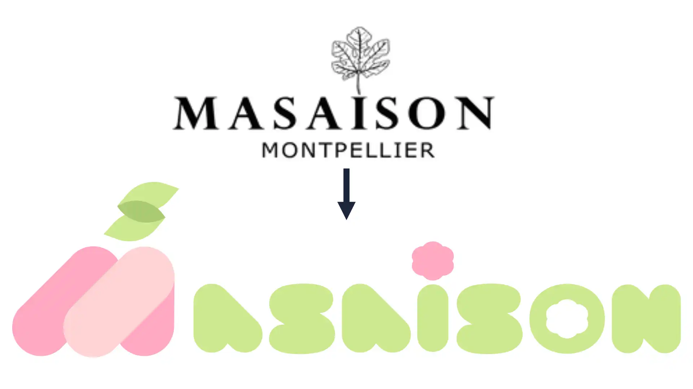
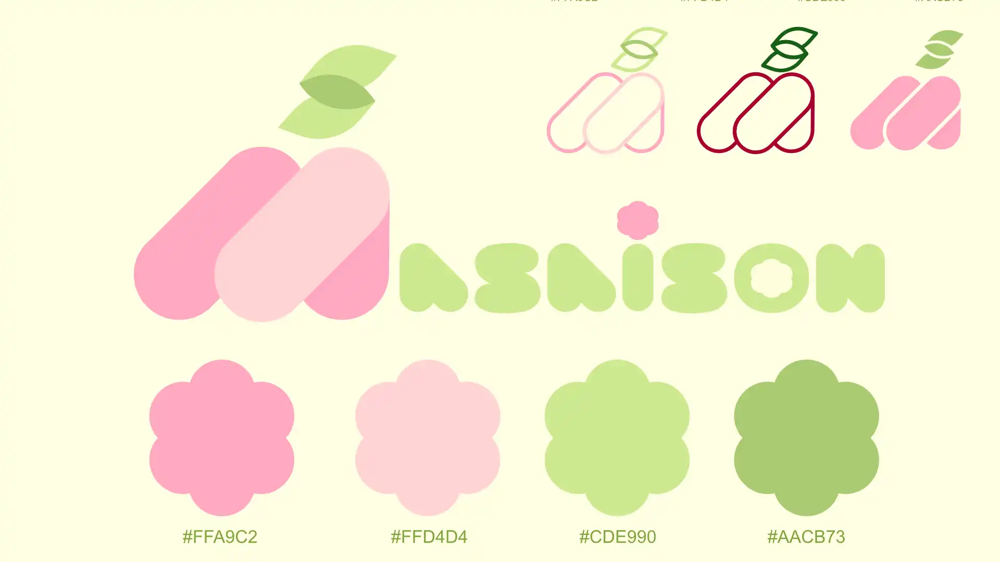
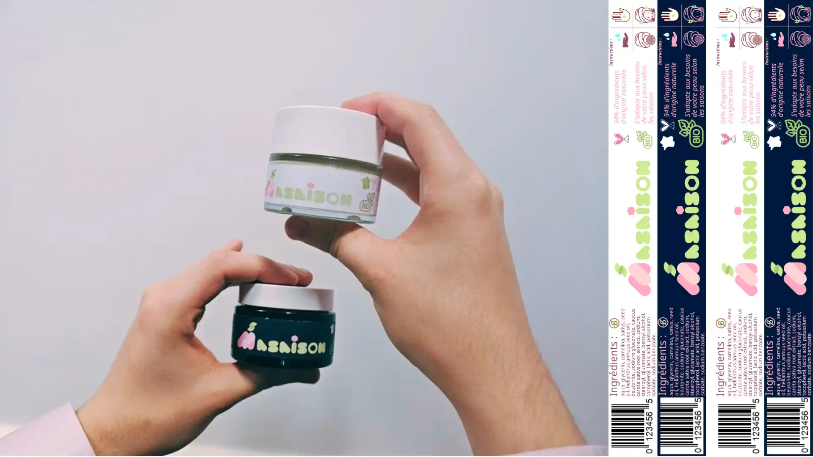

Projet pédagogique en équipe



Retravailler la communication d'une marque proposant des articles 'éco-conçues', voici le livrable qui nous a était laissé pour un travail en équipe à réaliser en une semaine. La marque choisie : Maisaison, propose des crèmes hydratantes et autres soins de la peau végan, cruelty-free et s'adaptant aux saisons.
J'ai occupé le rôle de designer graphique et de communiquant dans une agence fictive (pour un oral final), j'ai conçue une nouvelle image de marque pour la rendre plus accessible, visible, sans pour autant la rendre kitch ou en oubliant ses intentions éco-responsables. J'ai réalisé pour l'occasion une nouvelle identité graphique ainsi que de nouveau packaging.